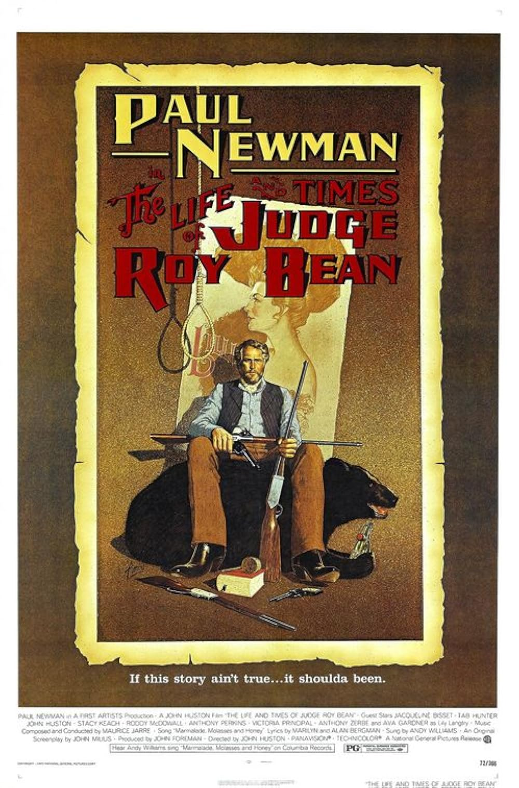

The Life and Times of Judge Roy Bean
45th Academy Awards
(Oscars 1973)
1 Nomination, 0 Awards
| Nominations | ||
|---|---|---|
| Category | Nominees | Result |
| Music (Song--Original for the Picture) "Marmalade, Molasses & Honey" |
Alan Bergman, Marilyn Bergman, and Maurice Jarre | Nominated |